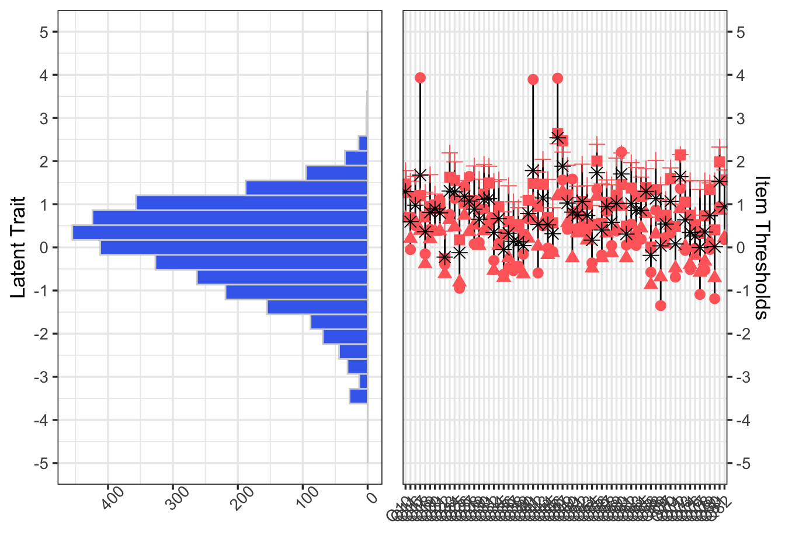

Scale Analysis
In this chapter, we examine the technical quality of the scales derived from the SHAS piloted items. Here we address questions like the following:
Person fit - How well does the current scale fit the population of examinees? Are there ceiling or floor effects? To what extent might the existing items under-represent the full range of abuse?
Scale invariance - Do the scales mean the same thing to different groups of examinees? To what extent do these scales (abuse constructs) vary by age, gender, and/or sexuality?
Developmental pathway - Beyond total scores, what might an incremental scale of in terms of items look like? What items might represent the most severe or most frequent forms of spiritual abuse?
We begin by defining scaling and discussing the importance of scale analysis. We report the results of our scale analysis from within the item response theory (IRT) framework. We conclude by considering what this information contributes to improved SHAS instrumentation.
The Item-Person Map
The item-person map (also known as the Wright map) is a tool for visualizing the results of a calibration of items and persons. The Wright map was originally developed for use in test development but it also helps illuminate the results of surveys (Bulut 2021). As Bulut (2021) explains:
“The Partial Credit Model (PCM), which is an extension of the Rasch model for polytomous item responses, can be used for survey development and validation (Green & Frantom, 2002). We can analyze survey items using PCM and obtain item thresholds for each item. These thresholds indicate the magnitude of the latent trait required to select a particular response option (e.g., selecting disagree over strongly disagree). Using an item-person map, we can see thresholds for the items as well as the distribution of the latent trait for the respondents. This plot is quite useful for analyzing the alignment (or match) between the items and respondents answering the items.”

Figure 6: Item-Person Map: All Likert Items
Figure 6 is an item-person map of all 66 Likert SHAS items against all of the examinees. In the plot, red points indicate item thresholds for each item (three thresholds separating four response categories) and the asterisk indicates the average value of the thresholds for each item. The higher these thresholds, the more spiritual abuse the examinee has experienced. On the left-hand side of the plot, we also see the distribution of examinees along the latent trait (i.e., the construct of spiritual abuse).
This plot offers several insights at a general level. First, the plot of examinees on the left suggests that the latent trait of spiritual abuse is normally distributed, with a slight negative skew. Very few examinees reported very low or very high levels of exposure to spiritual abuse; most reported a moderate to slightly higher than average level of spiritual abuse. Second, with this plot it is difficult to distinguish individual items but it does show that they tend to clusteraround this “slightly higher than average” level of spiritual abuse, with none capturing a very low level of abuse and just a handful of items measuring much higher than average levels of spiritual abuse. Three items had response categories that captured very high levels of spiritual abuse.